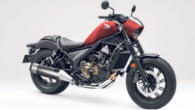
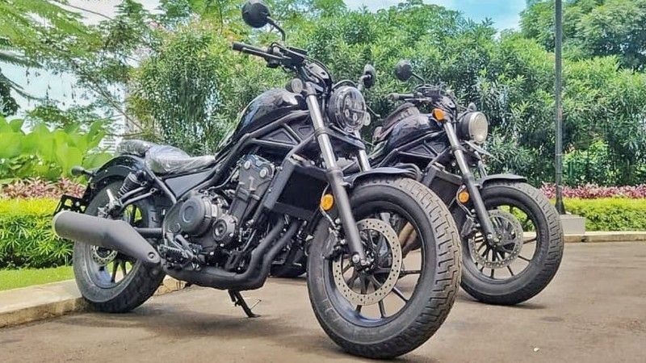

BUY-SELL HIGH QUALITY BIGBIKE

Honda is being gossiped about by many new motorbikes being developed. One model that is quite widely discussed is the 1,100 cc Honda Rebel. Reportedly this one model will use the engine base of the latest Africa Twin. Reported from GreatBiker, until now the Honda Rebel is only marketed in 500 cc engines only. With a cruiser and retro style, of course this is very similar to Harley-Davidson motorcycles. However, the difference, the 500 cc engine is too small when juxtaposed with the United States motorcycle manufacturer. If indeed Honda wants to target the same target market, the development of the Honda Rebel 1100 cc makes more sense.
If it is true that Honda will market the Rebel 1100 based on the Africa Twin engine, of course there will be an increase in power up to 100 hp. However, if the 1,100 cc engine is incorporated into the Honda Rebel, it is likely that the power will also be adjusted at low to medium speeds. Reportedly the Dual Clutch Transmition transmission system is also very likely to be used on this motorbike. Besides the large engine included in the Rebel 1100, reportedly the African explorer features will also be presented. Such as suspension, electronic throtle system, riding mode, cruis control, ABS, to the Inertia Monitoring Unit (IMU). Hopefully, the Honda Rebel 1100 will be launched by the end of 2020 at a price of around 400,000 Baht, in Indonesia it may be more than Rp 500 million. But for those who are interested, of course they have to wait quite a long time. Considering the red wing manufacturer has yet to issue any statement regarding this motorbike.Back to News